Плаж Варна - Пътеводител
За Варна
Варна е третият по големина град в България, морска столица. Това място предлага градски плажове, Морска градина, музеи, нощен живот, което го прави идеално за градски туризъм, шопинг, култура. Българското Черноморие простира на 378 километра и Варна има своя уникален характер и атракции.
Какво да очаквате
Централният плаж на Варна се простира на 8 км от Морската градина до к.к. Св. Константин и Елена. Плажът е широк пясъчен с постепенно задълбочаване, подходящ за семейства с деца. Инфраструктурата включва многобройни плажни барове, ресторанти, детски площадки и спортни съоръжения. Морската градина предлага сянка, алеи за разходка, Делфинариум, Аквариум, Планетариум и Зоологическа градина. Варна е отличен избор за тези, които искат да комбинират плажна почивка с културен туризъм - Археологически музей, Римски терми, Катедралата и многобройни галерии и театри.
Как да стигнете и практична информация
Летище Варна (VAR) е на 10 км от центъра с редовни автобусни линии №409 (1.50 лв) и такси (15-20 лв). Градът е добре свързан с цяла България с автобуси и влакове. Местният транспорт включва автобуси (1.50 лв билет) и безплатни велосипеди за наем в Морската градина. Настаняването варира от бюджетни хостели (20-30 лв/легло) до луксозни хотели (150-300 лв/нощувка). Хранене в центъра струва 15-30 лв за основно ястие, като местните механи извън центъра предлагат по-ниски цени.
Близки атракции
Освен плажа, посетителите могат да разгледат околните забележителности. Българският бряг съчетава природна красота с исторически места, традиционни села и възможности за туризъм, водни спортове и културни преживявания.
Най-добро време за посещение
Юни и септември предлагат отлично време с по-малко туристи и по-добри цени в сравнение с пиковите юли-август. Водата е достатъчно топла за комфортно плуване от средата на юни до средата на септември. За най-тихото преживяване и най-добра стойност, помислете за края на май или началото на октомври.
Съвети за посетители
Фотогалерия
Разгледайте нашата колекция от снимки от Варна, показващи плажа, съоръженията и атмосферата. Тези автентични изображения ви помагат да разберете какво да очаквате и да планирате посещението си ефективно.
- 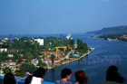
Варненското пристанище - 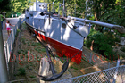
Подводница във Военния музей - 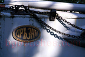
Подводницата Дръзки - 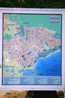
Карта на Варна - 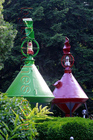
Водна мина - 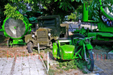
Експонати от Военноморския музей - 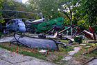
Хеликоптер - 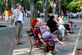
Центъра на Варна - 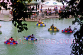
Забавления за деца - 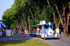
Увеселително влакче - 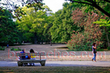
Морската градина във Варна - 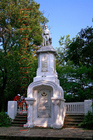
Паметник на граничаря - 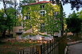
Къща с бръшлян - 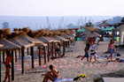
Варненският плаж - 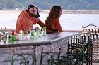
Свалки във Варна - 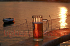
Залез във Варна - 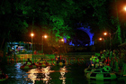
Езерото на Крайбрежието - 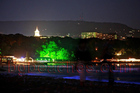
През нощта - 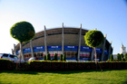
Сграда - 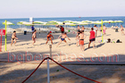
Плажен волейбол - 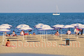
Плажа - 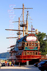
Кораб - 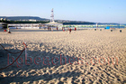
Варненските плажове - 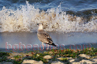
Чайка - 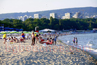
Южният плаж на Варна - 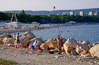
Рибари - 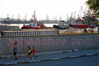
Плавателни съдове - 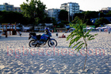
Дърво на плажа - 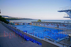
Плувен басейн - 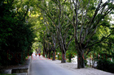
Алея във Варна - 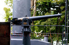
Оръжие - 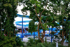
Водна пързалка 'Ролбата' - 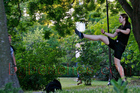
Варненски каратисти - 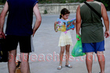
Любознателно момиче - 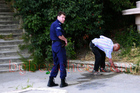
Полицията в действие - 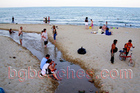
Канал към морето - 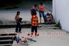
Из улиците на Варна - 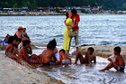
Различни светове - 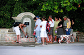
Чешма във Варна - 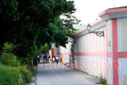
Крайбрежна улица - 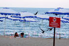
Момичета
Красиво момиче- 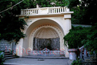
Градска чешма във Варна - 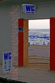
Тоаелтна - 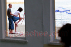
Гепи я 1 - 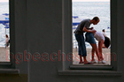
Гепи я 2 - 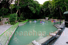
Водна атракция - 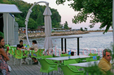
Фешън заведение - 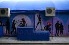
Крайбрежната улица - 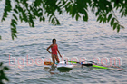
Сърфискта - 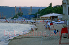
Централния плаж на свечеряване
Морската градина
Романс в морската градина
Делфини
Делфини скачат